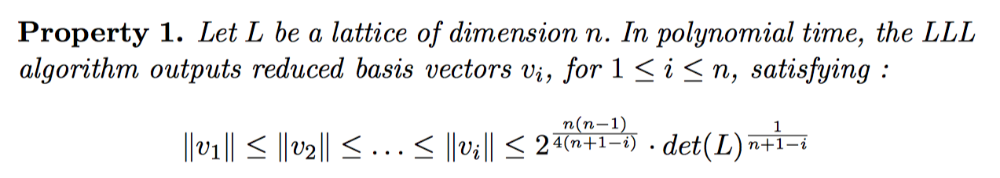

格基规约算法¶
Lenstra–Lenstra–Lovasz¶
基本介绍¶
LLL 算法就是在格上找到一组基，满足如下效果

而且，这种方法生成的基所具有的如下性质是非常有用的

简单应用¶
这里我举一下 LLL paper 中给的第二个例子。给定 n 个实数 \alpha_i,...,\alpha_n，找到这 n 个数的有理线性逼近，即找到 n 个数 m_i，使得 \sum\limits_{i=1}^{n}m_i\alpha_i 尽可能等于 0。 我们可以构造这样的矩阵，这里 a_i 为 \alpha_i 的有理逼近。
A = \left[ \begin{matrix} 1 & 0 & 0 & \cdots & 0 & ca_1 \\ 0 & 1 & 0 & \cdots & 0 & c a_2 \\ 0 & 0 & 1 & \cdots & 0 & c a_3 \\\vdots & \vdots & \vdots & \ddots & \vdots \\ 0 & 0 &0 & \cdots & 1 & c a_n \\ \end{matrix} \right]
矩阵为 n*(n+1) 的，我们可以根据格求行列式的方法来求一下这个格对应的行列式。
det(L)=\sqrt{AA^T}
我们进一步考虑这样的矩阵
A = \left[ \begin{matrix} 1 & 0 & 0 & \cdots & 0 & a_1 \\ 0 & 1 & 0 & \cdots & 0 & a_2 \\ 0 & 0 & 1 & \cdots & 0 & a_3 \\\vdots & \vdots & \vdots & \ddots & \vdots \\ 0 & 0 &0 & \cdots & 1 & a_n \\ \end{matrix} \right]
那么
AA^T = \left[ \begin{matrix} 1+a_1^2 & a_1a_2 & a_1a_3 & \cdots & a_1a_n \\ a_2a_1 & 1+a_2^2 & a_2a_3 & \cdots & a_2a_n \\ a_3a_1 & a_3a_2 & 1+a_3^2 & \cdots & a_3a_n \\ \vdots & \vdots & \vdots & \ddots & \vdots \\ a_na_1 & a_na_2 &a_na_3 & \cdots & 1+a_n^2 \\ \end{matrix} \right]
进一步我们从低维到高维大概试一试（严格证明，可以考虑添加一行和一列，左上角为1），得到格的行列式为
\sqrt{1+\sum\limits_{i=1}^n\alpha_i^2}
可以参见考研宇哥的如下证明

那么经过 LLL 算法后，我们可以获得
||b_1|| \leq 2^{\frac{n-1}{4}} (1+\sum\limits_{i=1}^n\alpha_i^2)^{\frac{1}{2(n+1)}}
一般来说后一项在开 n 次方时趋向于1，因为 a_i 都是常数，一般不会和 n 相关，所以
||b_1|| \leq 2^{\frac{n-1}{4}}*k
k 比较小。此外，b_1 又是原向量的线性组合，那么
b_1[n]=\sum\limits_{i=1}^{n}m_ic*a_i=c\sum\limits_{i=1}^{n}m_i*a_i
显然如果 c 足够大，那么后面的求和必须足够小，才可以满足上面的约束。
参考¶
- Survey: Lattice Reduction Attacks on RSA